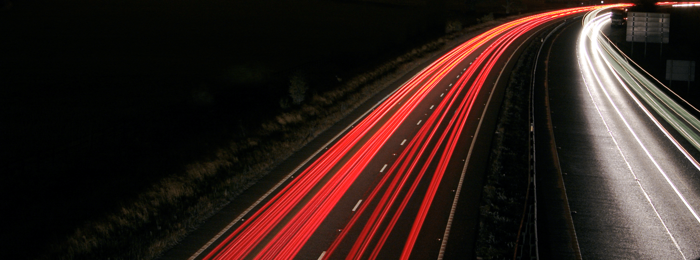

La Composicion Fotografica
2.5-Movimiento
El movimiento es uno de los principales motores de expresividad en la fotografía ya que los seres y objetos fotografiados a menudo están en movimiento mientras que la fotografía es eminentemente una instantánea congelada en la que nada se mueve.
La expresión del movimiento se consigue fundamentalmente actuando sobre el obturador y el diafragma y combinando estos elementos con otros como el enfoque selectivo.
Los dos efectos más habituales con respecto al movimiento son:
- Congelación de movimiento, es decir, conseguir que una imagen de alto dinamismo en pleno movimiento aparezca como congelada en medio de ese movimiento, de modo que proporcione al espectador la visión de un instante que normalmente el ser humano no capta de forma separada y estática. Ejemplos típicos de este efecto puede ser una fotografía de las gotas de un arroyo cayendo o un patinador en el aire en medio de un salto, etc.
- Desplazamiento del motivo, es decir, ajustar un tiempo de exposición suficientemente lento en la cámara como para que el movimiento del motivo a fotografiar, que está en movimiento, aparezca desplazado (movido) dentro de una foto en la que todo lo demás aparece nítidamente (no movido). Del mismo modo también se puede conseguir (con un barrido fotográfico perpendicular al motivo) captar una instantánea en la que el motivo permanezca nítido mientras que todo lo demás en la foto aparezca movido. Este efecto resalta de un modo espectacular el movimiento de los objetos y puede ayudar incluso a captar la atención hacia el motivo si bien su consecución requiere muchas veces de habilidad con los controles de la cámara y seguramente con un trípode.
- 
Licencia: dominio público